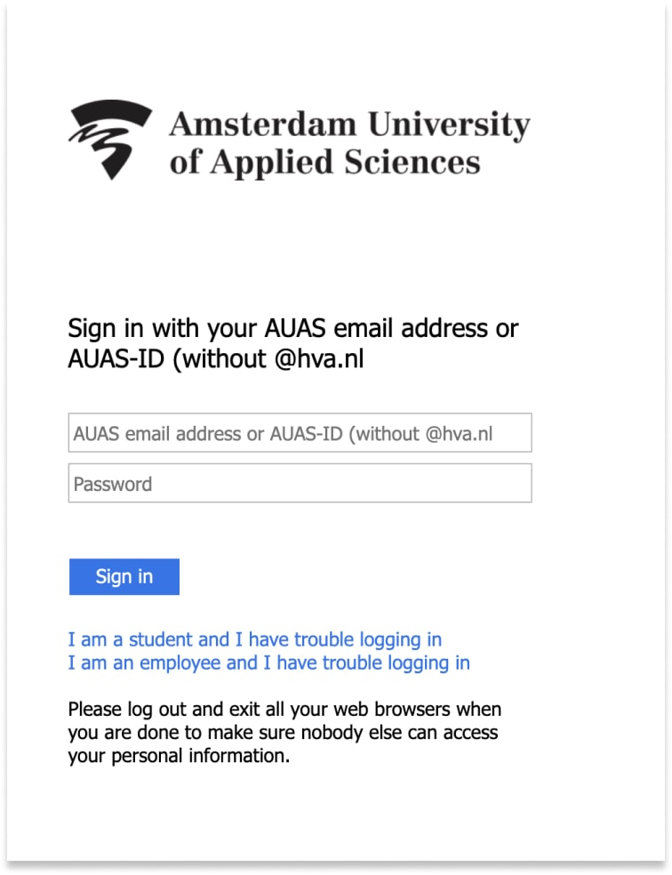
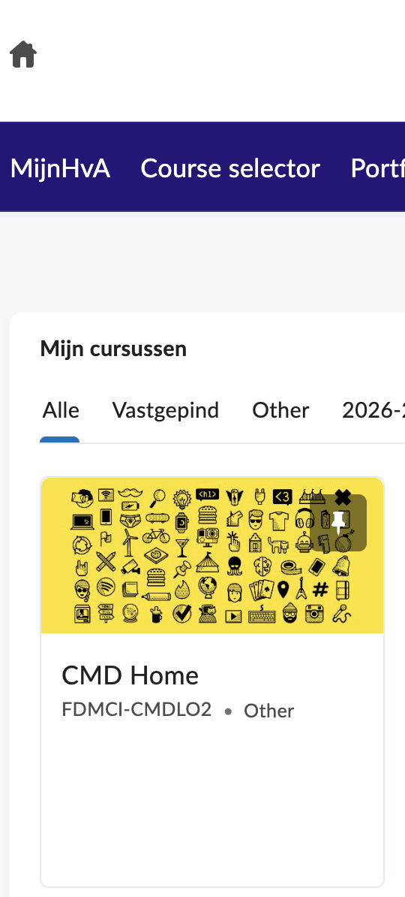

Digital Onboarding opdracht
De Digitale LeerOmgeving (DLO)
Brightspace is de digitale leeromgeving (DLO) van de HvA. Hier vind je al je courses (vakken), onderwijsmaterialen en mededelingen van je docenten.
Volg de onderstaande stappen om in te loggen op DLO:
- Ga naar dlo.mijnhva.nl
- Vul je HvA-ID en wachtwoord in.
- Klik op Sign in

Is het gelukt om in te loggen op DLO?
Probeer de stappen opnieuw te volgen en vraag het aan een klasgenoot, raadpleeg de Newbiegids of vraag je Leercoach.
Top, je bent ingelogd op DLO, hou de pagina nog even open voor de volgende stappen.
Controleer of je de tegel "CMD Home" ziet in DLO. Het kan zijn dat je onder het kopje "Mijn cursussen" moet kijken bij het filter "Alle".
Bij CMD Home staat alle opleidingsbrede informatie over CMD. Je zult hier gedurende je studie veel informatie kunnen vinden die specifiek is voor de opleiding.

Zie je de tegel "CMD Home" in DLO?
Als je de tegel "CMD Home" niet ziet, probeer dan eerst het filter "Alle" te gebruiken. Als je hem dan nog niet ziet, laat dit dan weten aan je Leercoach. Die neemt contact op met de jaarmanagers om te zorgen dat je hier toegang toe krijgt. Klik dan nu op "Ja" zodat je verder kunt met de volgende stappen. Je krijgt later alsnog toegang tot CMD Home.